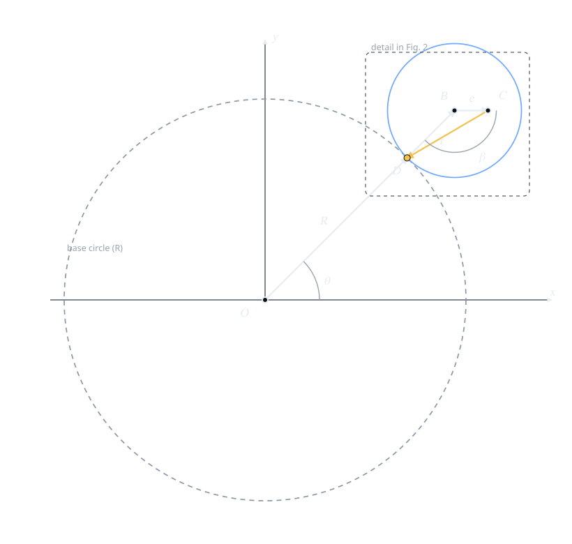
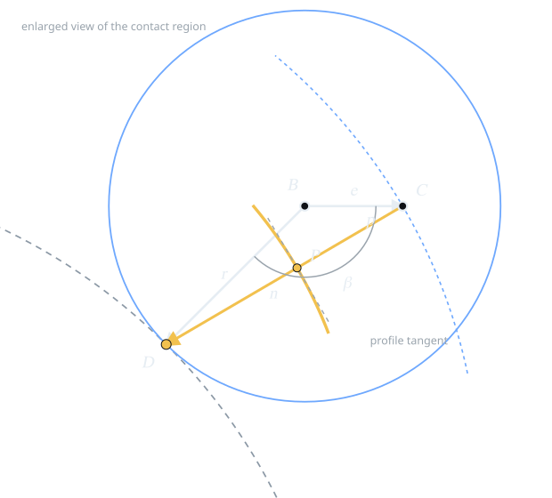
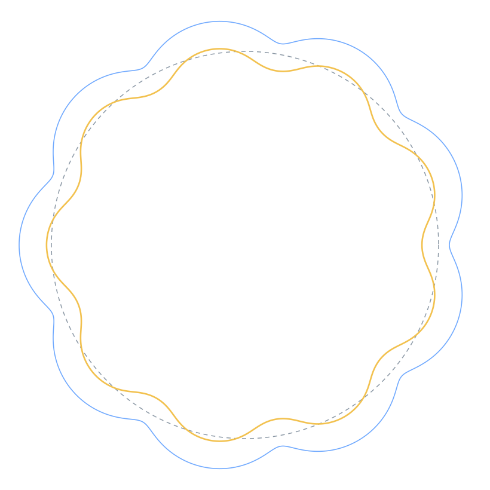

Contents
The profile of a cycloidal disc is usually introduced as a finished formula. This draft derives it from a construction. A circle of radius r rolls without slip on a fixed circle of radius R. A generating center C is fixed to the rolling circle at distance e from its center. The tooth profile is the curve at constant distance p from the path of C. The central result is the Radial Vector Law: at every instant, the normal from C to its path points exactly at the contact point D of the two generating circles. The law turns the construction into a closed-form profile equation, and that equation is what the CYROACT viewer and G-code generator implement.
This is Method 1 of three derivations. The proof was first presented publicly in a video several years ago. This page is the public written draft: no ISBN, no publisher, and no peer review. Methods 2 and 3 are not published here.
01Why a geometric derivation?
A formula can be checked without being understood. A construction explains where the terms come from.
The cycloidal disc profile is a trochoid offset by a roller radius. That sentence is true and nearly useless on its own: trochoid, offset, and roller radius are three separate pieces of geometry compressed into a name. The derivation below unpacks them in the order in which they can be drawn.
The construction has to satisfy three requirements at once:
- Rolling without slip. The arc traveled on the fixed circle equals the arc traveled on the rolling circle.
- A point fixed to the rolling body. The generating center must move with the rolling circle, not with the line of centers.
- A constant-distance surface. The tooth profile is the envelope of a circle of radius p centered on the generating center.
Once the three requirements are written as vectors, no fitting or empirical correction remains. The profile follows. The only non-obvious step is the normal direction; Section 06 proves it in one line of vector algebra.
This is planar geometry. It does not cover stress, bearing life, tolerances, thermal growth, or manufacturing compensation.
02The construction
Two tangent circles, one orbiting center, and one point carried by the rolling circle.
Let O be the center of the fixed base circle and R its radius. A rolling circle of radius r is externally tangent to it and rolls around it. At a general instant, let B be the center of the rolling circle and D the point where the two circles touch. Because the tangency is external, O, D, and B are collinear in that order, with D between O and B:
Let θ be the angle of the line of centers OB measured from the x-axis, and write u(φ) = (cos φ, sin φ). Then
The generating center C is a point fixed to the rolling circle at distance e from B. It is the center of the generating circle whose envelope is the tooth profile. It is not the contact point D, and it is not the center of the physical roller.
Figure 1 shows the construction. The rolling circle carries C around with it. The angle β is the rotation of the rolling circle relative to the line of centers; Section 03 fixes its value from the no-slip condition.

The figure uses a smaller ratio than the production set so that the construction fits on the page. The geometry is the same.
| Symbol | Meaning |
|---|---|
| O | Center of the fixed base circle |
| R | Base circle radius |
| r | Rolling circle radius |
| B | Center of the rolling circle |
| D | Instantaneous contact point of the two generating circles |
| C | Generating center, fixed to the rolling circle at distance e from B |
| e | Eccentricity: distance BC |
| θ | Angle of the line of centers OB |
| β | Rolling-circle rotation relative to the line of centers |
| k | Generating ratio, k = (R + r)/r |
| p | Offset distance from the generating center to the profile |
03Rolling without slip
One equation fixes the angle of the rolling circle.
While the line of centers turns through θ, the contact point travels an arc Rθ on the base circle. The same arc length must pass along the rolling circle. If β is the rolling circle's rotation relative to the line of centers, then
Define k = (R + r)/r = 1 + R/r. Then
The direction of BC in the fixed frame therefore advances at k times the rate of the line of centers. For the default production set (R = 36 mm, r = 4 mm), k = 10.
Two clarifications matter:
- β is measured relative to the line of centers, not the x-axis. The line itself turns by θ; the material of the rolling circle turns by β relative to that line. In the fixed frame, the carried radius advances by θ + β.
- k is the generating ratio, not the reducer ratio. For a fixed ring, the disc has N − 1 lobes. The default set has nine.
In Figure 1, θ = 45° and β = 135°, so the carried radius BC is horizontal: 180° + 45° + 135° = 360°. This is why C sits directly to the right of B in the figure.
04Coordinates from vector addition
Write the chain, then read off the components.
The path from O to C is a sum of three vectors:
Each term is known:
- OD = R u(θ).
- DB = r u(θ), because D and B lie on the same ray from O.
- BC = e u(θ + β + π) = −e u(kθ), because BC points toward the contact side when θ = 0 and turns with the rolling circle.
Therefore
In components,
Equation (6) is the entire motion of the generating center. It has the form of a curtate epitrochoid: an epicycloid when e = r, and a circle of radius R + r when e = 0.
The vector chain ends at C. The segment CD is not part of the chain; it is the direction that will be used for the offset, and it is separate from the position of C.
For Figure 1 (R = 12 mm, r = 4 mm, e = 2 mm, θ = 45°, k = 4): B = (11.314, 11.314) mm, D = (8.485, 8.485) mm, and C = (13.314, 11.314) mm. The distance BC is 2 mm, as required by the construction.
05The angle hypothesis, and why it fails
A correct triangle does not automatically give a correct direction.
The first attempt treated the problem as a triangle. In triangle BDC, the sides BC = e and BD = r are known, and the included angle at B is β. The law of cosines gives
The angle at D follows from the same triangle:
All of this is correct. It is also not enough. Ω is an angle inside a triangle whose side BD is itself rotating with the line of centers. It is not the angle of CD measured from the x-axis. Treating Ω as a global direction, or attaching it to the wrong side of BD, reflects or phase-shifts the offset curve. A numerical reconstruction from the angle model did not reproduce the coordinates of C and D: the triangle was right, but the frame was wrong.
The failure suggests a change of question. Instead of asking for the angle of CD, ask for the vector D − C. Points do not need a reference angle; their difference is already a direction.
The triangle relations (8)–(9) are retained. The interpretation of Ω as the generating-radius direction is not. Section 06 replaces it with the direct vector D − C.
06The Radial Vector Law
The normal to the generating path points at the contact point.
Start with the vector from C to D. Using (2) and (6),
Now differentiate C. Since u′(φ) = t(φ) = (−sin φ, cos φ) and d(kθ)/dθ = k,
Rotate C′ by +90° with R90(x, y) = (−y, x). Because R90(t(φ)) = −u(φ),
The two vectors are positive multiples of each other. Therefore the unit normal is
For every θ, the normal from the generating center C to its path points at the instantaneous contact point D. Equivalently, the generating radius CD is normal to the path of C.
The law is a kinematic identity, not an approximation. D is the instantaneous center of the rolling motion, and the normal to the path of any point carried by a rolling body passes through that center. The algebra in (12)–(13) is the vector form of that statement.
The law also has a practical consequence: the implementation never has to compute an angle or a separate trigonometric square root. It rotates the derivative and normalizes. That is the form used in production.

07The profile equation
Offset the generating path by p along the law's normal.
Let p be the offset distance. In production it is the roller radius plus clearance. The profile point is
To write n in closed form, compute |V|. Since |u| = 1,
Therefore
Substituting (6) and (16) into (14) and grouping by direction gives a compact closed form:
In components,
Equation (17) is the profile in closed form. It is correct and compact, but the implementation does not evaluate Q. Instead it uses the derivative directly:
This is algebraically identical: (−dya, dxa)/L is exactly n. The derivative form is cheaper and avoids a separate trigonometric square root. It is the form used in both implementations.
The default production set
The viewer ships with the following defaults. The values are taken from the parameter schema; the derived quantities follow from (3)–(19).
| Quantity | Value | Relation |
|---|---|---|
| Pins N | 10 | parameter N |
| Pitch diameter D | 80 mm | parameter D |
| Rolling radius r | 4 mm | D / (2N) |
| Base radius R | 36 mm | (N − 1)r |
| Eccentricity e | 2 mm | parameter e |
| Roller diameter d | 10 mm | parameter d |
| Clearance | 0.1 mm | parameter clearance |
| Offset p | 5.1 mm | d/2 + clearance |
| Generating ratio k | 10 | (R + r)/r |
| Lobes | 9 | k − 1 = N − 1 |
| Radial range | 32.900–36.900 mm | computed from (17) |
Default geometry as used by the web viewer and the Python reference. The radial range is measured from the disc center.
Figure 3 plots this set. The blue curve is the generating path C; the gold curve is the profile P. The profile is not the generating path. It is a constant-distance offset of it, and it is the curve that is cut into the disc.

Here C is the center of the generating circle, not a pin center. D is the instantaneous center of the rolling construction. The physical roller radius enters only through p.
08Verification and implementation
What was checked, and where the formula lives.
The law is exact, so the numerical checks below test the implementation rather than the geometry. The residuals are double-precision noise.
| Check | Configuration | Result |
|---|---|---|
| Normal identity |R90(C′) − k(D − C)| | Default set, 2,000,001 samples | 8.0 × 10−14 mm |
| Closed form (17) vs implementation (19) | Default set, 1,000 samples | 1.4 × 10−14 mm |
| Normal identity, randomized parameters | 20,000 parameter sets | ≤ 2.9 × 10−13 (scaled) |
| Lobe count | Default set | 9 |
| Radial range | Default set | 32.900–36.900 mm |
| Production parity | TypeScript against Python golden meshes | pass |
Scaled residual = |left − right| / max(1, |right|). Checks run on 21 October 2026.
The reference implementation, simplified for readability:
import numpy as np
def disc_tooth_profile(R, r, e, p, theta):
k = (R + r) / r
xa = (R + r) * np.cos(theta) - e * np.cos(k * theta)
ya = (R + r) * np.sin(theta) - e * np.sin(k * theta)
dxa = (R + r) * (-np.sin(theta) + (e / r) * np.sin(k * theta))
dya = (R + r) * (np.cos(theta) - (e / r) * np.cos(k * theta))
L = np.hypot(dxa, dya)
return xa - p * dya / L, ya + p * dxa / L
The shipped Python function is disc_tooth_profile in
pyvista_3d_viewer/cycloid_profile.py. The TypeScript port is
discToothProfile in
web_viewer/src/geometry/cycloidProfile.ts, called by the plate
builder. The two use the same expression; the viewer's golden-mesh suite is the
parity check between them.
The derivative C′ is rotated by 90° and normalized. By (12), that rotation is parallel to D − C. No approximation is involved; the code is equation (13), written without Q.
09Scope, status, and citation
What this page is, and what it is not.
Method 1 of three derivations. The proof was first presented publicly in a video several years ago; this page is the public written draft. It has no ISBN, no publisher, and no peer review. Methods 2 and 3 are not published here.
Notes on this written version
- C is defined directly on the rolling circle. This version does not use the auxiliary circle from the earlier draft.
- D is the tangency point: OD = R and DB = r. D is the midpoint of OB only in the special case R = r.
- The vector chain ends at C: OD + DB + BC = OC. The segment CD is treated separately as the normal direction.
- The triangle angle Ω is retained as a correct identity, but not as a global direction. The Radial Vector Law supplies the direction.
What the derivation does not cover
Stress, bearing selection, tolerances, thermal growth, lubrication, dynamics, and manufacturing compensation. The page is about the planar geometry of the profile, and nothing else.
Citation
No DOI or ISBN is assigned. If you cite this page, cite the title, author, date, and the URL at which you retrieved it.
See the equation in use
The viewer applies this profile to the complete cycloidal assembly, including the disc stack, ring pins, output pins, and bearings. The G-code page uses the same profile for the cut path.